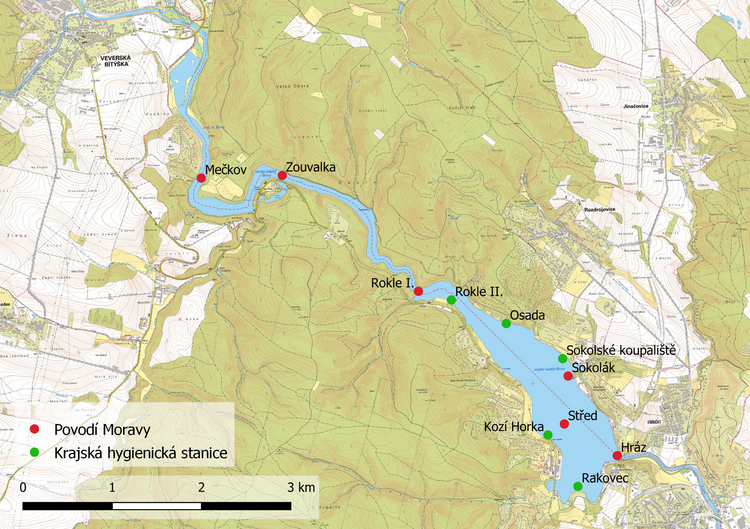

Metodika sběru in-situ dat a tvorba map
Jednou z možností, jak získávat data o jakosti vody, je odběr a následná analýza vody v laboratoři. Kvalitu vody v nádrži ovlivňuje látkový přínos do nádrže a výsledek procesů uvnitř nádrže. Z toho důvodu se měří dynamická data na přítoku a statická data na různých místech nádrže. Na přítoku se měří hydrologická data pomoci limnigrafu a odebírají se vzorky vody pro chemický, fyzikální, mikrobiologický a hydrobiologický rozbor. Statická data se měří dvěma způsoby. Část kvalitativních měření se provádí přímo na místě pomocí sond (například multiparametrálním analyzátorem YSI 6600) na celé vertikále po 1 metru, což umožňuje okamžité zhodnocení aktuálního stavu vody, jak na hladině, tak u dna. Druhá metoda vyžaduje odběr hloubkovým odběrákem na stejné vertikále, na které se předtím měřilo sondou. Takto odebraný vzorek se podrobí laboratorní analýze, která přesněji zhodnotí jakost vody.
Pro nejrychlější zjištění stavu vody nejlepší použít data naměřená pomocí sondy. Ta zjišťuje stav několika různých faktorů, ale pro kvalitu vody jsou nejdůležitější tyto: teplota vody, obsah kyslíku, zákal vody a množství chlorofylu-a. Teplota vody je klíčovým faktorem, který ovlivňuje ostatní faktory a procesy v nádrži. Závisí hlavně na teplotě vzduchu, ale protože se voda neprohřívá rovnoměrně, vytváří se v ní tzv. letní teplotní stratifikace, kdy vznikají dvě oblasti různě ohřáté vody – teplé při hladině a studenější při dnu, které jsou navzájem odděleny skočnou vrstvou. V teplejší vodě se s přispěním dalších látek (kyslíku, fosforu a dalších) snadněji tvoří sinice.
Kyslík ve vodě je nutný pro život většiny vodních organismů. Jeho zdrojem je difuze ze vzduchu a fotosyntéza zelených rostlin. Kvalitu vody ovlivňuje nedostatek kyslíku, který bývá v létě u dna, kde dochází k uvolňování fosforu vázaného v sedimentech do vody. Proti tomuto jevu se na Brněnské přehradě nainstalovaly aerační věže. Množství kyslíku se udává v procentu nasycení kyslíkem a jeho obvyklá hodnota se pohybuje okolo 20 %, pokud klesne blízko nuly, dochází k anoxii a úhynu organismů. Zákal vody (průhlednost) se měří pomocí Secciho desky, což je kotouč o průměru 30 cm se čtyřmi výraznými kvadranty a kalibrovanou desetimetrovou šňůrou. Tato deska se ponořuje pod hladinu a v momentě kdy již nelze kotouč rozeznat se odečte hodnota na šňůře. Vysoký zákal vody je dalším indikátorem snížené jakosti vody a dle vyhlášky Ministerstva zdravotnictví č. 464/2000 Sb. je limitní hodnota vody vhodné ke koupání stanovena na 100 cm. Ke stanovení množství chlorofylu-a se využívá fluorometrického stanovení, které využívá principu fluorescence k měření obsahu chlorofylu-a ve vodě.
Pro zpracování map byla použita metoda vážené inverzní vzdálenosti, kdy při určení hodnoty neznámého bodu je všem měřeným bodům přiřazena váha podle jejich vzdálenosti od neznámého bodu. Váha je určena jako hodnota inverzní vzdálenosti mezi body. Čím je jejich vzdálenost větší, tím menší mají vliv při interpolačním procesu. Hodnota bodu se následně vypočítá jako vážený aritmetický průměr hodnot všech okolních bodů. Problémem této metody je omezení výskytu maximálních a minimálních hodnot pouze na měřené body, kolem kterých mohou často vznikat vyvýšené špičky nebo jamky.